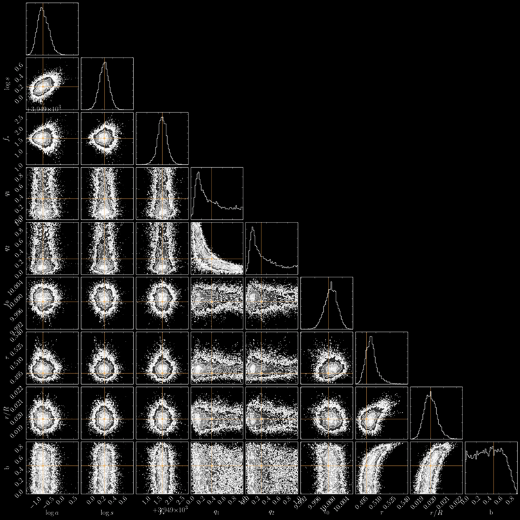

Research
My research and teaching interests include computational and applied mathematics. In particular, my current research focuses on constructing highly accurate fast algorithms leveraging approximation theory and numerical linear algebra.
The SAFRAN (Stable Accurate Fast Robust Algorithms & Numerics) group was born in April 2016 at IISc and moved to IITM in September 2017. Students interested to be part of the group can apply for the research program at IITM Madras. Interested candidates are strongly encouraged to apply to either the Mathematics Department or the Interdisciplinary program. More details on the research at Mathematics Department and the Interdisciplinary program can be found here.
Members:
Current
- Sivaram Ambikasaran (Convenor)
- Nachiketa Mishra - (Post Doctoral Fellow, ICTS)
- Kandappan - (Ph.D. Student, IISc)
- Manisha - (Ph.D. Student, ICTS)
- Vaishnavi - (Ph.D. Student, IISc)
- Abhay Gupta - (M.Tech. Research Student, IISc)
Alumni
- Richa Naik (Intern, IITM)
- Deeksha Koul (Final Year Project student, DAICT)
- Karan Raj Singh (Project Assistant, BITS)
- Chaitanya Tappu (S.N.Bhat Intern, IISc)
- Ankit Kumar (S.N.Bhat Intern, NIT Rourkela)
Publications
- Daniel Foreman-Mackey, Eric Agol, Ruth Angus, Sivaram Ambikasaran, “Fast and scalable Gaussian process modeling with applications to astronomical time series”, Submitted to AAS journals.
- Sivaram Ambikasaran, Krithika Narayanaswamy, “An accurate, fast, mathematically robust, universal, non-iterative algorithm for computing multi-component diffusion velocities”, Proceedings of Combustion Institute.
- Sivaram Ambikasaran, Carlos Borges, Lise-Marie Imbert-Gerard, Leslie Greengard, “Fast, adaptive, high order discretization of the Lippmann-Schwinger equation in two dimension”, SIAM Journal of Scientific Computing
- Sivaram Ambikasaran, “Generalized Rybicki Press algorithm”, Numerical Linear Algebra with Applications.
- Sivaram Ambikasaran, Michael O’Neil, Karan Raj Singh, “Fast symmetric factorization of hierarchical matrices with applications”
- Amirhossein Aminfar, Sivaram Ambikasaran, Eric Darve, ``A fast block low-rank dense solver with applications to finite-element matrices”, Journal of Computational Physics
- Sivaram Ambikasaran, Daniel Foreman-Mackey, Leslie Greengard, David W Hogg, Michael O’Neil, ``Fast Direct Methods for Gaussian Processes”, Transactions on Pattern Analysis and Machine Intelligence
- Jun Lai, Sivaram Ambikasaran, Leslie F Greengard, ``A fast direct solver for high frequency scattering from a large cavity in two dimensions”, SIAM Journal of Scientific Computing
- Sivaram Ambikasaran, Eric Darve, “The Inverse Fast Multipole Method”
- Judith Y Li, Sivaram Ambikasaran, Eric Darve, Peter K Kitanidis, “A Kalman filter powered by ℋ2-matrices for quasi-continuous data assimilation problems”, Water Resources Research.
- Sivaram Ambikasaran, “Fast Algorithms for Dense Numerical Linear Algebra and Applications, Stanford Thesis”, Stanford Thesis
- Sivaram Ambikasaran, Arvind Krishna Saibaba, Eric Darve, Peter K Kitanidis, “Fast Algorithms for Bayesian Inversion”, The IMA Volumes in Mathematics and its Applications
- Arvind Krishna Saibaba, Sivaram Ambikasaran, Judith Y Li, Peter K Kitanidis, Eric Darve, “Application of hierarchical matrices in geostatistics”, Oil & Gas Science and Technology - Revue d’IFP Energies Nouvelles.
- Sivaram Ambikasaran, Judith Y Li, Peter K Kitanidis, Eric Darve, “Large-scale stochastic linear inversion using hierarchical matrices”, Computational Geosciences.
- Sivaram Ambikasaran, and Eric Darve, ‚ÄúAn ùí™(NlogN) fast direct solver for partially hierarchical semi-separable matrices‚Äù, Journal of Scientific Computing.
- K. Bhaskar, Sivaram Ambikasaran, ``Untruncated infinite series superposition method for accurate flexural analysis of isotropic/orthotropic rectangular plates with arbitrary edge conditions”, Composite Structures.
Sample Research
-
Fast Linear Algebra Algorithms
The major focus of the group is to reduce the computational complexity of linear algebra algorithms at the same time maintaining high accuracy.
-
Dense linear algebra
Typically, linear algebra algorithms for dense matrix vector products scale as ùí™(N2) and for solving dense linear systems scale as ùí™(N3), where the underlying matrix is of size N × N. This is excruciatingly slow for large-scale practical problems, making it unattractive for large-scale simulation needed for optimization and design. However, note that since most of the computation is done in finite precision (say machine precision of 16 digits), we can devise approximate but arbitrarily accurate numerical algorithms, that scales favorably and guaranteeing high precision.
-
Sparse linear algebra
To solve partial differential equations, discretizing the PDE using finite difference or finite element method is preferred in practice. Such discretizations result in a sparse linear system, which needs to be solved. Solving the corresponding linear system of size N × N using nested dissection or multifrontal strategies requires a computational cost of ùí™(N(d+1)/2), where d is the underlying dimension. Our focus is on reducing these computational costs to ùí™(N) guaranteeing high precision.

-
-
Design Centric PDE Solvers
One major application focus of our group is on designing accurate, fast ODE solvers for a wide range of applications, for instance, electromagnetic scattering from penetrable and impenetrable objects, advance stealth applications, material homogenization, imaging, etc. Traditional solvers have been mainly based on iterative techniques, which has its own set of disadvantages. For instance, the number of iterations to converge may be extremely large making it impractical. Another disadvantage, especially for design, is that any modifciation to the geometry or incoming field typically results in restarting the entire iterative solver, which is definitely not desirable. To circumvent these disadvantages, our focus is to design high accurate and fast direct solvers for such systems.

-
Computational Statistics
One of the core issues in computational statistics and large scale data analysis is efficient manipulation of dense covariance matrices, which describe the interdependence between several random variables or random processes. This is especially the case in spatial statistics and time series. In the previously mentioned contexts, the correlation matrices have a highly exploitable structure.
 -
Black-box tools, reproducible and open source computational science
There are several implementations of the fast multipole method and fast direct solvers, but very few provide standalone implementations or the basic ``building blocks” that can be easily re-used. One of our focus is to develop such standalone implementations, which will be of use in many other applications. Another endeavor is to have the tools for computational science available to the public as open source standalone numerical libraries. To this end, we maintain a GitHub repository(https://github.com/sivaramambikasaran) and a GitLab repository (https://gitlab.com/groups/SAFRAN), where all the numerical packages, which include fast multipole method, fast direct solvers, quadratures, etc., developed by us are posted and made available to the public.

List of possible research topics
Below are some of the possible research projects, one can pursue as a member of our group. The list is only indicative and by no means exhaustive. Look here for more details on the research program at IIT Madras. Students are also welcome to discuss other projects that interest them to pursue research under my guidance. Choose Mathematics Department and Interdisciplinary program, if you wish to be considered for the group.
- HODLR: In-house fast linear algebra package for hierarchical matrices
- Direct solvers for high frequency scattering
- Linear complexity solvers for finite element matrices
- Fast algorithms for integral equations based inverse obstacle scattering
- Fast algorithms for integral equations based inverse medium scattering
- Linear complexity algorithms for computational statistics
- Algorithms for solving elliptic PDE’s with rapidly oscillating coefficient with applications to material homogenisation
- Matrix Analysis: Pivoting algorithms and analysis of growth factor
- Accurate multi-component diffusion in counterflow diffusion flame
- Compact chemical mechanism
- Accurate simulation of cool flames
Mathematical Packages
A significant part of the group’s effort is to develop inhouse mathematical packages and make them available to the scientific community. These are made available in the hope that they will be useful, but without any warranty. All the codes can be redistributed and/or modified under the terms of the appropriate license.
- BBFMM2D: Black Box Fast Multipole Method in two dimensions
- FLIPACK: Fast Linear Inversion PACKage
- HODLR: Fast Direct Solver for hierarchical off-diagonal low-rank matrices
- ESS: Extended Semi-Separable and the Generalized Rybicki Press algorithms
- George: Fast and flexible Python library for Gaussian Process Regression
- Celerite: A scalable method for Gaussian Process regression.
Funding
Present
- INSPIRE faculty award by Department of Science & Technology
- Young Scientist Research Award by Department of Atomic Energy
Past
- Start-up grant by Indian Institute of Science
- Simons Foundation Fellowship by ICTS
- Infosys Foundation Funding by ICTS
- AIG